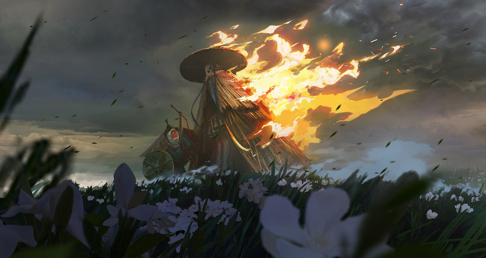
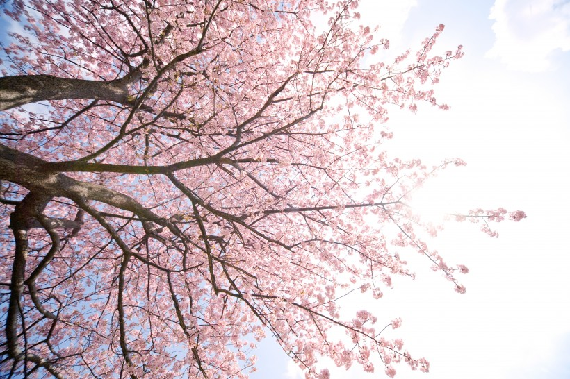

你们还愿意为自己坚守的正义而战吗？

你所做的事情都是你少年时的梦想吗？你在人生漫漫长路上，是否迷失了你当时所想要抵达的方向？你抛弃了真我，你让外界的欲望充斥着你的身体，你被时光打磨掉了积极向上的棱角，你变得只想要你自己过的更好。
刚开始，你做着大家都认为好的事，你曾无数次在选择的路口，选择着你心中认为对的方向。可是，渐渐的你走错了地方，你曾想过要回头，可是你却发现你根本没有勇气回头了，你钢铁一般的意志被自我与利益包裹住，你体验到了一种奇妙的感觉，你彻底背叛了自己的初心，你丢弃了真我，
你知道你永远摆脱不了，于是你便放弃抵抗，深深的沉入其中，即使是万丈光芒，也无法把你从这深潭中照亮。
我们走在上生活的道路上，一路恍惚，我们迷失了方向，走在正确的道路上，我们不断的被邪恶的思想拉扯，我们不停的被
不公正的人与事物裹挟着前行，有些人在人生的道路上迷失了方向，他们钻进了名与利的管道中，无法自拔，深入其中。
你常常用心贴近世界，偶然间你发现，你所倾听到的都是绝望的语言，都是你从未倾听过的怒吼。你有些迷茫了，你忘了你最初听到的是什么，也忘了最初想要听到的是什么，你曾经走到了一个终点，你却忘了你想要到达的终点是否是这个终点。
你曾经在这条道路上徘徊不前，有人牵着你的手继续前行，你找到了方向，牵着你的手走的人和你一起走到了路口，他选择了他喜欢的路，并且希望可以在路的尽头看到你。你沉思了许久，却走上了另一条路，你找到了方向，却又忘记了最初的选择。
或许你从最初开始，你就发现了你走的路不是你想要走的路，但是你在一路的风光中，你从未想过回头。也或许你想过要回头，只是你在好与坏天平上仔细衡量之后，你毅然决定放弃了那满是光芒的一边，黑暗的天平压垮了秤杆，也泯灭了你曾经想要达成的梦想。就像一瓶墨水倒在了水中，你墨水晕染了整个水面。你没有去换水，而是躲在水下，无声无息。
所以，你得到的结局并不美好，你这一路上有无数人向着你伸出求救的手，你选择性的忽略掉了，你在最初时一定会伸出的手，你把你的手留给了你自己。你一边走，一边向着道路两旁欢呼，你看着路旁绝望的眼神，心里止不住的兴奋，你又遇到了一个站在路中间的人
你毫不犹豫的把他推到了道路的一边，你仿佛忘了你刚开始时为了什么而走上了这条路。
